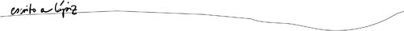

|  |
|
Hola a todos, Cecilia Hernández Molano, una de nuestras ilustradoras de escrito a lápiz, participa en una expo colectiva en MadisMad. La expo se inaugura hoy, no os hemos enviado antes la invitación porque no nos ha dado tiempo a hacerla, pero aún podéis anular vuestros planes y venir un rato. Apuntar en vuestra agenda que podréis volver a visitar la exposición pues permanecerá tres meses en la sala. En una de las paredes hay una serie de collages y otra de serigrafías basada en el librito doce cuentos, por todos conocido... pero hay más paredes y en ellas habrá libros, azulejos, vídeos, muñecos, cajitas, ilustraciones y más cosas chulas de más gente... y hasta naves espaciales!, pero ésas en el techo. 29 de octubre, a las ocho de la tarde en MadisMad en la calle Pelayo 48 de Madrid, metro Chueca. |
Para más información podéis visitar la web de la artista, donde no dice nada de la expo pero se pueden cotillear sus trabajos:
rizomarte.com, o escribir un mail a info@escritoalapiz.es Si quieres saber más sobre doce cuentos y su editorial visita nuestra web: escrito a lápiz |